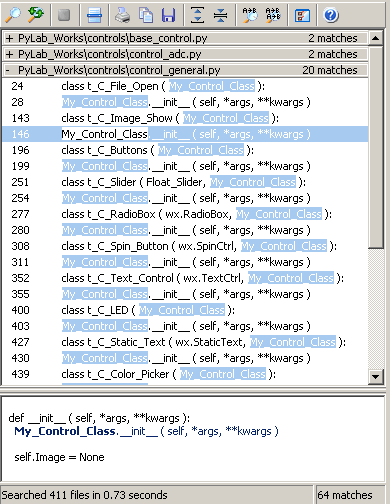
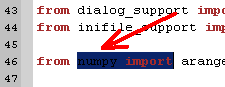
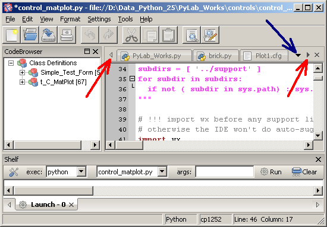
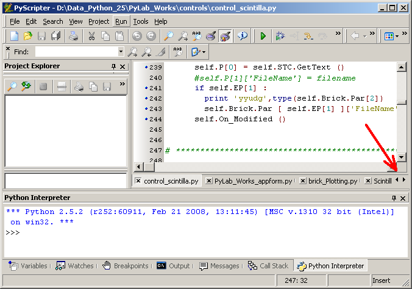
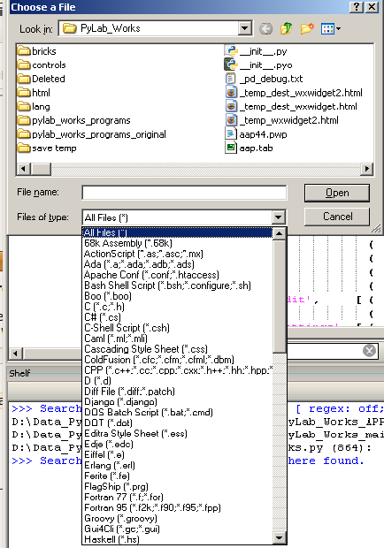

Other IDE  ( may 2009 )
( may 2009 )
Application Designer / Domain Expert / Control Designer / Core Developer
PyScripter (1.9.9.1)
This is best IDE for Python I've seen so far. It still has some disadvantages:
SPE
SPE looks like a Chinese copy of PyScripter. Doesn't remember most settings, all kinds of unnecessary questions, doesn't jump to lines, etc. As the difference between PyScripter and SPE was too large, I looked for another IDE, that could be used in both Windows and Ubuntu, and that brought me to Editra.
Editra
Serious omissions
Small omissions
Search
Search should start with the selection within the current file and if no selection is available, the current word should be used.
Case Match, Whole words, Search in comments should all be selectable.
The search strings should be maintained in a history list.
In the results the search string should be highlighted.
A preview of a (selectable) number of lines is sometimes very handy.
Here an example of PyScripter, quit good, but it contains a lot of non information: buttons, number of files searched, searchtime.

Selection
In Editra, selected words become invisible:

Many open files
Having many files open, it's difficult to navigate between the files.
Editra at least has the advantage that on the right there is an dropdown list (blue arrow).

PyScripter has only controls on the right side.
Closing files, don't scroll in the files from the left.

Run Args
args are not saved, args field could be filling up the complete space
Other Non-information
